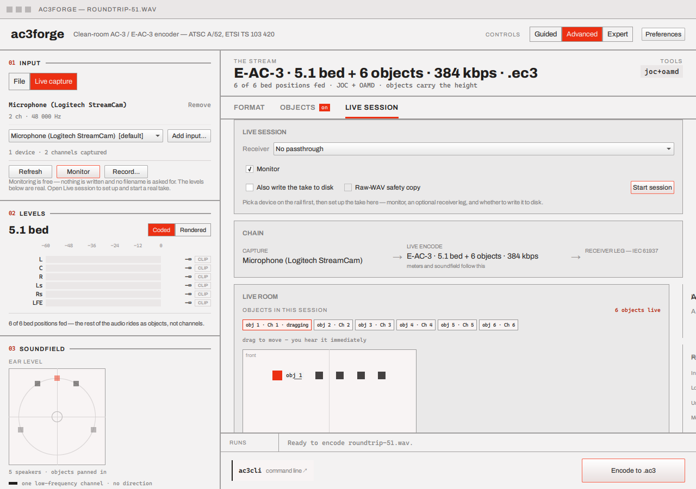
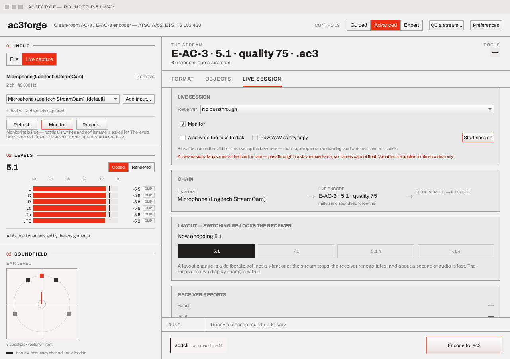

Live capture & session¶
Starting a capture¶
The rail's Input block, switched to Live capture, is where devices get chosen (up to two, see Two-device capture below) and where the two signal-side acts live: Monitor (a session that writes nothing and asks for no filename — the meters and soundfield run against the real encoded signal, and checking a device never commits to a take) and Record… (capture straight to a file). Both act on the master device alone, the same as a single-device session. The rail keeps nothing else: a real session — one with a take on disk or a receiver leg — starts on the Live session tab's own Live session Card.
The Card has two states. Idle, it is the pre-flight: a Receiver combo (No passthrough plus
every enumerated output device), a Monitor checkbox (checked by default), an Also write the
take to disk checkbox, a Raw-WAV safety copy checkbox — enabled only once write-to-disk is
checked, see Take durability below — and a highlighted Start session
button, enabled whenever capture is available and nothing else is running. Checking write-to-disk
makes Start session ask for a save path first, and the session starts once the dialog closes;
unchecked, the session starts immediately and writes nothing. Running, the Card becomes the
transport: a Stop session button, zero-padded RUNNING / FRAMES / DROPPED counters, and a
disabled Also writing the take to disk readout, since that choice is made pre-flight and
cannot change mid-session.

Starting a real session — a take on disk or a receiver leg wanted — focuses the tab; Monitor, however it is started, never steals the tab you are configuring.
The VBR warning¶
Rate mode lives on the Format tab, shared with plain file encoding — and it does not render at all while the live source is selected: a live session cannot honour it, so the control would only mislead. A VBR choice made earlier still exists, so the Live session tab's own Card carries a note in its idle state whenever VBR is on:

A live session always runs at the fixed bit rate, regardless of the rate mode: IEC 61937 passthrough bursts are fixed-size per access unit, and nothing renegotiates burst framing mid-stream, so the VBR setting is dropped unconditionally before a session ever starts. The run entry a real session opens says so too — its rate text is always the fixed rate.
No screenshot of an active session here
The idle Card above is a real capture, taken against a running build with a genuine device enumerated on the machine. A session actually running is not shown: driving one would mean recording live audio through a microphone just to illustrate a UI state, so the running transport, the chain strip mid-run, the reconnection banner, and the Live room's live-only controls are described from the implementation rather than photographed.
Two-device capture: clock-master model¶
A session is capped at two capture devices. The rail's live branch is a per-device list,
mirroring the file branch's own per-source list: one row per selected device — name,
N ch · 48 000 Hz, Remove — plus Add input… (disabled at the cap, with a "two devices
per session" note) and a totals line (2 devices · 4 channels captured). The first row is always
the master; the second, when present, the slave.
Clock model. The master's delivery paces the session's frame loop exactly as in a
single-device session. The slave is an independent capture, and there is no shared hardware
clock between two WASAPI shared-mode endpoints, even nominally identical ones on the same PC:
left alone, the slave's stream drifts against the master's a sample at a time. Two small,
Qt-free, allocation-free library pieces (src/audio/include/ac3/audio/resampler.hpp) correct
that:
ac3::audio::DriftResampler— a streaming linear-interpolation fractional resampler. Linear interpolation, not a windowed-sinc design: at the drift magnitudes a free-running consumer clock actually exhibits (tens of parts-per-million) linear interpolation's error sits far below the codec's psychoacoustic floor, and at a genuine nominal-rate conversion (44.1 → 48 kHz) it trades some high-frequency accuracy near Nyquist for an allocation-free, state-tiny implementation appropriate to a live capture hot path. It carries only a fractional read position betweenrender()calls — no sample data of its own.ac3::audio::ClockDriftEstimator— the servo that decides the resampler's ratio: a small proportional controller steering the worker's own slave-side scratch FIFO back towards a target occupancy (one frame period's worth), smoothed with a one-pole filter so the ratio moves in small, audio-safe steps rather than jumping.ratio()is the nominal conversion (master_rate / slave_rate, 1.0 when both devices run the same nominal rate) composed with the measured correction;drift_ppm()is that correction alone, signed, zero until the servo has seen data.
Each frame period, after the master's own blocking capture-fill completes, the worker opportunistically
drains whatever the slave's ring buffer holds (non-blocking — the master's wait already gave it
roughly one frame period's worth of wall-clock time to deliver), feeds the FIFO's occupancy to the
estimator, and resamples exactly kSamplesPerFrame slave frames to sit alongside the master's own.
If the slave's nominal rate differs from the master's, the same resampler handles the nominal
conversion and the drift correction together — one ratio, composed once per frame period.
Drift visibility. The Live session tab's chain capture cell shows the slave's measured
correction — slave −18 ppm — updated with the same ~30 Hz cadence as every other live stat,
empty (and the line hidden) outside a two-device session. Honest, not estimated ahead of time:
it is the correction the resampler is actually applying.
Channel space. The flat capture-channel space object slots address gains the slave's channels
after the master's — devices are sources, the same identity concept loaded files carry. The Live
room's channel picker names each flat index (Ch 1… for the master, Dev2 Ch 1… for the slave),
and per-slot bind/reassign (see Objects & motion) works the same across
both devices — a slot simply addresses a wider space. A plain channel-mode session's bed still
comes from the master alone: the routing's panning model treats a source's channel count as a
specific named WAV speaker layout (§7.8), which has no sound meaning for two independent devices
concatenated together, so there is no principled default position to auto-pan the slave's
channels into. The slave's audio is still captured, drift-corrected, watched by its own silence
watchdog and reflected in the drift readout either way — just not auto-routed into a bed position
with no honest default.
Session plumbing. The second device is the rail's own selection state, not part of any one start request, so it persists across a layout-switcher restart automatically. A bad or vanished slave (unplugged between selection and start) degrades non-fatally to an ordinary single-device session, the same low-ceremony treatment a failed monitor-sink open gets. The silence watchdog covers each device independently: either going silent for three seconds fails the session, and the failure text names the one that actually went quiet.
CLI parity. ac3cli live takes a trailing capture2=<index> token naming the second device,
built on the same shared resampler and drift estimator — see
CLI → Options & grammars for its grammar.
The GUI's own command bar emits it whenever the rail has two devices selected, so the line stays
honest.
The Live session tab¶
The Live session tab exists whenever the live source is selected in the rail (Advanced and Expert) — it is where a session is understood, not a modal that only appears once one is already underway. It carries:
- A reconnection banner while the receiver re-locks to a new bitstream format — named after the actual endpoint ("Renegotiating with Denon AVR-X3800H."), because the session knows exactly who is re-locking. This fires for a session's own first passthrough open and for a receiver hot-swap alike — either way about a second of audio is lost, and the banner says so rather than hiding the dropout; a Skip dismisses it early for whoever can hear the receiver has already settled.
- The transport row described above: Stop session, RUNNING/FRAMES/DROPPED, and the disabled write-to-disk readout.
- A "chain" strip showing the three legs as separate plans: Capture (the actual device, with
its
2 ch · 48 000 Hzsub-line) → Live encode (follows the picker — what the meters and soundfield show, printed without a file suffix a session may never write) → Receiver leg — IEC 61937 (with the burst data type it is actually sending). - A gap banner when the receiver leg carries less than the encode — three reasons reach it: object mode against an E-AC-3-capable receiver (the leg is always just the 5.1 bed — a consumer decoder gates object decoding regardless of what the receiver itself can bitstream), object mode against an AC-3-only receiver (the leg is the parallel downmix of that same bed), and a wide channel layout against an AC-3-only receiver (the leg is a 5.1 downmix of the full layout). The banner text names whichever applies. A passthrough that was asked for and did not open gets its own banner instead, carrying the reason — "everything past what the leg carries" would be a lie when the leg carries nothing.
- A draggable Live room plan — the same object-placement view as
Objects & motion with its crosshair and wall names, active only in
Atmos mode, applying each drag to the running encode immediately — plus a read-only Objects
in this session chip list. A live Atmos session pre-allocates a fixed budget of object
slots at start — the combined capture channel count of both selected devices, held to at least
8 and at most 15 — baked into the encoder's construction and unable to change mid-session (that
is how JOC's own object count works), rather than the channel count exactly: a two-channel
device still gets eight slots to grow into, and past eight combined channels every slot starts
bound identity-wise (slot i fed by capture channel i). Which capture channel feeds which
slot is otherwise live and mutable: a channel-picker ComboBox naming every capture channel
(
Ch 1…Ch Nfor the master,Dev2 Ch 1… for a selected slave — see Two-device capture), plus Add (binds the next free slot), Reassign selected (acts on whichever object the room has selected) and Silence selected (detaches the selected object's capture channel) sit on the Card, visible only while live. The OBJECTS IN THIS SESSION counter readsN of M slots live(bound slots over the budget) while a session is running, and plainN objects livein the non-live, file-loaded object-mode case. Beside the room, an x/y/z/latency readout grid tracks whichever object is selected; latency starts as a two-frame estimate (one period to fill the capture buffer, one to encode and hand off) and, once monitoring has run for about a second and the pipeline's startup transients have passed, is replaced by the real measured capture-to-monitor round trip — the label reads~N ms measuredonce that lands, and~N ms est.until then or whenever monitoring is off, since there is nothing to time a round trip against. - A Layout switcher and a receiver-reports card (see below). The same Receiver combo above
the Card serves both phases of a session: before Start it is the pre-flight pick; once live, an
explicit choice hot-swaps the passthrough leg instead of restarting anything — see
Receiver hot-swap. The reports card leads with two receiver-display
rows — Format and Input — above Lock, Underruns and Monitor. Both read the
ACTUAL leg on the wire, not the main plan:
DOLBY DIGITAL PLUS/the full shape when the receiver takes the main format, orDOLBY DIGITAL/5.1whenever the parallel downmix leg is the one actually carrying the signal.
Real sessions also land in the run history: a take or a receiver leg
opens a run entry (duration live), so a mid-session failure — including the device-drop
watchdog's own, see Device-drop detection — has a chip and a banner to
land on, and a finished take has a Show in folder. Monitor-only checks deliberately stay out
of the history, watchdog failures included: only a take on disk or a receiver leg opens the entry
in the first place.
Live position input over OSC¶
Object mode's pre-flight card (the same idle Card Starting a capture
describes above, visible only while atmosEnabled — a channel session has no objects to drive)
carries three more controls: a Drive objects from OSC checkbox, a port field (default
9000), and an any interface checkbox, off by default — loopback only, the same security
posture as the CLI's local/any split (see CLI → Commands → Live &
hardware for why that default matters and the full OSC address
space). All three are pre-flight-only, exactly like Also write the take to disk and Raw-WAV
safety copy on the same Card: Start session reads them once, and they are fixed for that
session's lifetime — toggling the checkbox mid-session does nothing until the next session
starts.
Once a session with OSC on is running:
- The transport row (Stop session, RUNNING/FRAMES/DROPPED) gains an OSC counter reading
N updates, N dropped. - In the Live room, an object a live OSC update currently owns is drawn greyed out and stops responding to drag — a click or drag there is refused outright rather than fought over — and its marker instead tracks whatever the network feed most recently sent. An object nothing has addressed is still an ordinary, draggable, manually-placed object exactly as before this feature existed, so one session can freely mix network-driven and manually-placed objects.
/object/<n>/releasefrom the network side hands that object back to manual control — its marker un-greys and starts responding to drag again.
No screenshot of OSC-driven markers here
The same reasoning as the running transport's own note applies: showing a network-driven marker mid-session would mean recording actual network traffic into a screenshot just to illustrate a UI state, so the grey-and-undraggable marker behaviour is described from the implementation rather than photographed.
This page's job is the GUI controls; the wire protocol behind them — the positions= grammar, the
/object/<n>/xyz|gain|lfe|release address space, and the loopback-vs-any-interface security
note — is identical on both front ends and documented once, on the CLI side: see
CLI → Commands → Live & hardware.
Take durability¶
A live session writes each encoded unit to disk as it is produced — never accumulating the whole take in memory to write once at the end, which would make an hour-long session unbounded memory and a crash lose everything captured.
The output file opens — or, for fragmented MP4/CMAF, the output folder is created — before the session is marked live, so a bad destination path is refused up front exactly like a bad device choice, not discovered as a mid-take failure minutes in.
What "writing incrementally" means depends on the container, but each writes straight into the chosen destination — there is no separate spool file for any of them:
- Elementary stream (
.ac3/.ec3): every byte written is the take, from the first frame on — a crash leaves exactly what was captured, playable up to that point. - Matroska (
.mkv): batch muxing needs the whole frame list to compute anything, which a live session never has until it decides to stop — so this container instead pushes each unit into an incremental Matroska writer (matroska::Writer,src/matroska) built for exactly this case. Segment is written with EBML's reserved "unknown size" pattern, the standard way a streamed Matroska declares a length it cannot know yet, and Duration is omitted for the same reason — real players handle both the way they handle any other live-streamed Matroska. The writer hands back a just-closed cluster's bytes on the (roughly one-per-second) pushes where the time budget closes one, and nothing otherwise, so the session never holds more than one cluster's worth of audio in memory regardless of how long it runs. A clean stop flushes the trailing partial cluster; nothing else needs closing, since Segment's size was never written as a real number to begin with. A crash truncates the take — whatever clusters had already reached disk are complete, valid Matroska, so the.mkvitself plays up to that point: the same honest "playable up to where it stopped" guarantee the elementary-stream path gives, not a companion file to fold in by hand afterward. - Fragmented MP4/CMAF: a folder, not a file, and the only container here whose manifests
change as the take runs. Each unit goes into
mp4::FragmentWriter(src/mp4), the incremental fragmenter built for exactly this case, which hands back a complete CMAF media segment every time a fragment closes (48 access units, about 1.5 s); that segment is written assegment<N>.m4sandaudio.m3u8/master.m3u8/manifest.mpdare rewritten beside it. While the session is running they are live-shaped — no#EXT-X-ENDLIST, and atype="dynamic"MPD with anavailabilityStartTime— so the folder is a servable origin mid-take; Stop flushes the trailing partial fragment and closes both to their VOD/static forms.init.mp4is written at the first frame rather than at Start, because itsdac3/dec3box is read off the bitstream and there is no bitstream to read before then; the folder itself is still created (and refused if it cannot be) before the session goes live. Only one fragment's frames are ever held, so memory stays bounded for a session of any length. A crash mid-take leaves every already-written segment complete and a playlist listing the ones that had closed — the same "playable up to where it stopped" guarantee, one segment coarser.
The two file-based paths flush to disk roughly once a second (not per frame) rather than on every write; the fragmented-MP4 folder has no long-lived stream to flush, since each segment and manifest is a complete file written and closed as it is produced.
The Container combo's other three choices — S/PDIF, MP4, MPEG-TS — fall into the
elementary-stream path above during a live session, not their own. For MP4 that is a format
limit: moov/stco need every frame's final offset, so there is nothing to push a live unit
into. S/PDIF and MPEG-TS both do have streaming writers, and a recording — the Record
button's capture-to-file take — uses them through RecordingSink; ac3cli live reaches them too,
with container=spdif and container=ts. The gap is on this side:
EncoderController::openLiveOutputWriters special-cases exactly two incremental writers,
matroska::Writer and mp4::FragmentWriter, and everything else falls through to the plain
write. So a live session with one of those three selected keeps writing the plain stream, exactly
the file it would write with the combo left on Elementary stream; the container only changes what
a file encode wraps it as afterward (see
Container).
There is also an optional raw-WAV safety copy: the pre-flight "Raw-WAV safety copy" checkbox
is only consulted once the take is also being written to disk. When on, it streams the raw
captured PCM — device channel order, unencoded, before any routing or mixing — to a sibling
.raw.wav file (beside a fragmented-MP4 folder, not inside it: the safety copy is source audio,
not part of the CMAF asset a packager would be pointed at) through a streaming WAV writer (ac3::io::WavStreamWriter) that appends
interleaved samples as they arrive and, like the take itself, periodically re-patches its RIFF
header rather than only at close. Without that, a process kill mid-session leaves a WAV
whose header still claims zero data bytes even though the file holds real audio — most readers
trust the header's declared size over the file's actual length, so an unpatched header would make a
real partial take look empty. Patching it every second or so means the worst a hard crash can do
is undersell the last fraction of a second.
Device-drop detection¶
The capture read loop runs a silence watchdog (ac3::audio::SilenceWatchdog) that tracks how
long ago the last read attempt actually delivered audio, with a three-second timeout.
Once that gap passes, the session stops as a failure, not a silent "still running": the status line and the failure banner name the device —
"Microphone (Logitech StreamCam)" stopped delivering audio - the capture device may have been disconnected. Wrote 212 frames before it went quiet.
— and that wording is what makes the failure banner's Choose another device action appear:
the banner treats a failure as device-shaped when its text mentions a device, bitstreaming, or
IEC 61937. For a real session, the run entry lands with status failed and its frame count. A
monitor-only session that loses its device still stops and the status line still updates the same
way — it just has no run chip or banner to land on, because monitor-only checks never open a run
entry in the first place.
Receiver hot-swap¶
Changing the Receiver combo on the Live session tab's own Card — or picking No passthrough —
while a session is running does not stop the session. The swap closes whatever passthrough sink
is open and opens a new one for the chosen endpoint, entirely on the session's own worker thread,
between frames, so no two threads ever touch the sink at once. Capture and encode keep running
uninterrupted through the swap — only the receiver leg blinks.
A hot-swap that cannot open (the chosen endpoint refuses the current format) shows the same refusal text a fresh session's own first passthrough open uses — one open-and-explain path, not two copies of it. The reconnection banner ("Renegotiating with X… expect a second of silence") fires exactly as it does for a session's initial passthrough open: a hot-swap is a real exclusive-mode re-open too, so the same brief interruption applies.
On the Live session tab, the same receiver combo serves both roles — before Start it is the pre-flight choice; once live, an explicit pick performs the hot-swap.
This is a different act from switching layout, below: that still stops the whole session, applies the preset, and starts a fresh one; a hot-swap never stops anything, and only ever changes the receiver leg.
Parallel downmix receiver leg¶
Passthrough is not all-or-nothing: an AC-3-only receiver during an E-AC-3 or Atmos session is not left with a bare "cannot bitstream" refusal and a silent amplifier while the encode, meters and monitor carry on. It gets a capped leg instead: a second, independent AC-3 encode running in the session's worker loop, alongside — never in place of — the main encode.
When it engages. Exactly when passthrough is wanted, the main plan needs E-AC-3 (any object session, or a wide channel layout), and the chosen receiver cannot take E-AC-3 but can take plain AC-3. A receiver that can take neither format is still a genuine refusal — the leg only ever turns a receiver limitation into sound, never papers over an actual open failure.
What it encodes. The leg carries no separate §7.8 fold-down math of its own: every layout
here (5.1, 7.1, 5.1.4, 7.1.4) is built on a 5.1 bed, and the routing already renders each
bed-position coded channel from the bed layout alone, once per frame for the main encode, using
the plan's own cmixlev/surmixlev — so a wide session's first six coded channels are already a
self-sufficient 5.1 downmix, and an Atmos session's bed is the same thing for object mode. The
leg simply feeds those already-computed channels to a second AC-3 frame encoder — no separate
fold to get right or keep in sync with the main one. Its bit rate is the main session's own rate
reduced to the nearest legal Table 5.18 rung at or below 640.
Where it goes. The leg opens through the same passthrough path a session's initial open and a
receiver hot-swap share, asking the device for plain AC-3 rather than
whatever the main plan would have asked for, and describing itself distinctly
(Dolby Digital · 5.1 · <name>, not the ordinary AC-3-session wording or Atmos's "5.1 bed only"
text). There is still only one passthrough sink per session — the leg does not open a second
device, it changes what the existing sink is asked to carry. A hot-swap re-runs the same
capability check between frames: moving to an E-AC-3-capable receiver drops the leg and
bitstreams the main format again; moving to an AC-3-only one spins the leg up.
Truthful UI. The chain's receiver cell, the Receiver reports Format/Input rows and the gap banner all read the actual leg rather than the main plan (see the Live session tab above). The layout switcher's legend says the same thing: a dotted layout is not a dead end, just capped to the 5.1 downmix rather than bitstreamed as encoded.
Switching layout mid-session¶
The Layout — switching re-locks the receiver card offers the presets (5.1, 7.1, 5.1.4, 7.1.4) — and the Format tab's own preset buttons do the same thing during a live session, per the design's interaction table. Picking one stops the running session, applies the preset, and starts a new session with the same capture/monitor/receiver choices — the deliberate stop-renegotiate-resume the reconnection banner narrates, not a silent switch, and not the lighter receiver hot-swap above, which never stops anything at all. The dots and the legend are derived from the actual receiver: against an AC-3-only endpoint, layouts past 5.1 carry the dot and the legend names the device ("Dotted layouts encode and meter fully — Denon AVR-X3800H bitstreams Dolby Digital only, so this receiver hears a 5.1 downmix of them.") — with the parallel downmix leg in place, a dotted layout is never a dead end: it still encodes and meters fully, the receiver just hears the capped 5.1 downmix rather than the layout itself. An E-AC-3-capable receiver bitstreams every layout as encoded, and the legend says that instead. The switcher refuses two states honestly: object mode (the layout is fixed at a 5.1 bed — the card says so) and a take being written to disk (a restart would clobber the first half of the file; stop the session and start a new take instead).
This is the GUI equivalent of ac3cli live: capture → encode → optional live monitor and/or
passthrough, running continuously and still writing the file record always has. See
CLI → Commands for the command-line form, including the
live mode distinction between channels and atmos — the GUI's Atmos-mode live room is that
same atmos mode, with the timeline replaced by real-time motion.
What is now at parity (roadmap IO9). ac3cli record and ac3cli live reach the same
capabilities this page describes, through the same code where the code is shareable:
- Wide layouts and E-AC-3.
recordandlive mode=channelstakelayout=andcodec=(see CLI → Options & grammars) and place the captured channels onto them by direction through the sameplan::routethis page's own layout switcher drives. Neither is stereo-AC-3-only any more. - Container choice, and take durability with it. Both commands take
container=raw|mkv|ts|spdif|fmp4(cmafis an accepted alias for the last; see CLI → Options & grammars) and write throughRecordingSink— literally the same class, moved toapps/common/and compiled into both front ends — so a CLI take and a GUI take of the same container are the same bytes produced the same way, with the same bounded memory and the same mid-session crash safety. - Device-drop detection. Both take
watchdog=<seconds>(default 3,0disables) and stop the session as a failure the first timeac3::audio::SilenceWatchdogfires — the same class, the same default, the same rule.capture2=gets its own watchdog, so a dropped slave is reported as the slave. - The live object-slot budget.
live mode=atmostakesobjects=<N>and binds capture channels to slots withmap=(obj/objm/none, the same grammar the Format tab's assignment table uses — see Multi-source & assignment), against a budget fixed at session start exactly as Add object allocates against one here. A GUI assignment is reproducible headlessly. - The parallel downmix leg. An AC-3-only receiver during an
E-AC-3 or object CLI session now hears a capped 5.1 AC-3 encode of the bed the main plan already
computed, instead of a plain refusal; the file still carries the full stream.
downmix=offrestores the refusal. - Two-device capture, as before —
capture2=<index>(see Two-device capture) uses the same sharedDriftResampler/ClockDriftEstimatorpair on both sides.
What is still GUI-only, and honestly so: receiver hot-swap (changing the
passthrough endpoint mid-session), the live latency readout, and every interactive affordance this
page describes — the soundfield view, the chips, the banners. A command line has no mid-session
input, so a hot-swap has nothing to be triggered by; ac3cli live resolves its receiver once, at
session start, including whether the downmix leg runs.
Next¶
That's the whole app. Back to Concepts for the standards this all
implements, or Library to build something with ac3::forge directly.